Photo credits
Where the pictures come from.
Every picture on this site was generated for this demo. None of them shows Coatsby's work, because Coatsby does not exist, and none of them is a photograph of a real house, a real job or a real person.
| What it shows | Where it came from | Used for | |
|---|---|---|---|
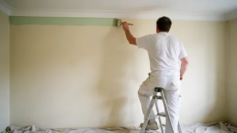 | A decorator cutting in the line where the wall meets the ceiling, used on the home page, the interior painting page and the work page | Generated for this demo | Illustrative only |
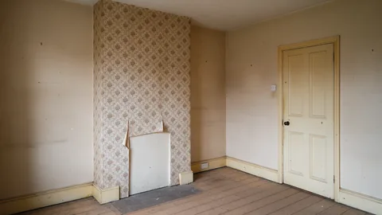 | The 'before' half of the slider: a tired room with dated walls, scuffs, an old paper lifting on the chimney breast and yellowed gloss | Generated for this demo | Illustrative only |
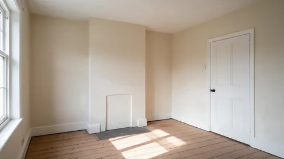 | The 'after' half of the slider, generated from the 'before' picture so it is the same room | Generated for this demo | Illustrative only |
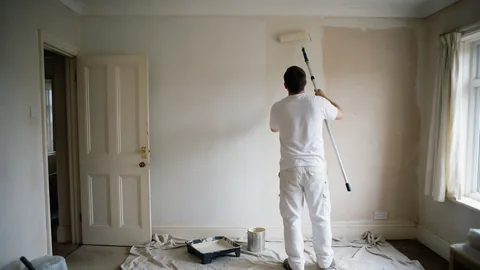 | A wall being rolled and laid off in fresh emulsion, used on the interior painting page and the work page | Generated for this demo | Illustrative only |
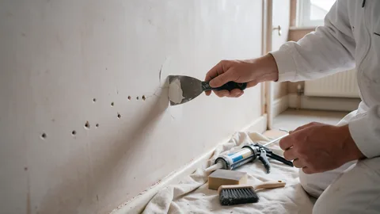 | Hands filling holes and a crack with a filling knife, a caulk gun alongside, used on the interior painting page and the work page | Generated for this demo | Illustrative only |
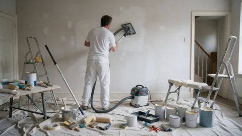 | Filled walls being sanded flat with a pole sander and the dust drawn off, used on the interior painting page | Generated for this demo | Illustrative only |
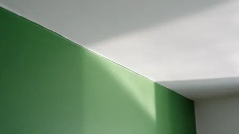 | A finished cut in line where a green wall meets a white ceiling, used on the interior painting page | Generated for this demo | Illustrative only |
 | A rendered house front being rolled in masonry paint, used on the exterior page and the area pages | Generated for this demo | Illustrative only |
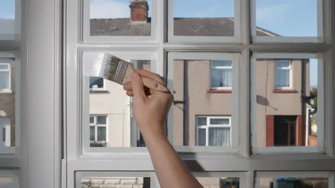 | Exterior timber being cut in in fresh gloss with the glass masked, used on the exterior page and the exterior season article | Generated for this demo | Illustrative only |
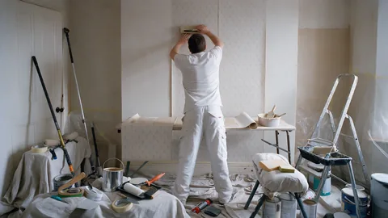 | A length of paper being smoothed down off a plumb line, used on the wallpaper page and the work page | Generated for this demo | Illustrative only |
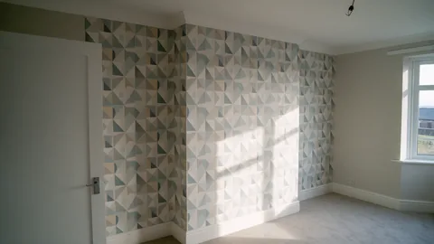 | A finished feature wall with the pattern matched at every seam, used on the wallpaper page and the work page | Generated for this demo | Illustrative only |
 | Two panel doors on trestles, one brushed in satinwood and one sanded back bare, used on the woodwork page and the work page | Generated for this demo | Illustrative only |
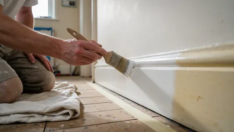 | A long run of skirting being cut in with the floor taped, used on the woodwork page and the work page | Generated for this demo | Illustrative only |
 | Painted kitchen cabinet doors standing in a drying rack on trestles, used on the cabinets page, the work page and the units article | Generated for this demo | Illustrative only |
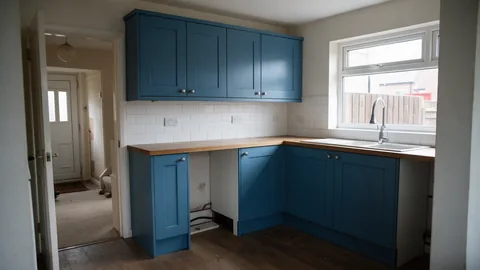 | A finished kitchen with the painted doors back on and level, used on the cabinets page and the work page | Generated for this demo | Illustrative only |
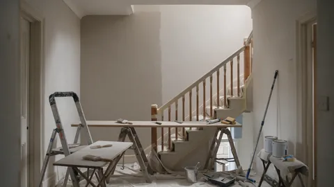 | A hall, stairs and landing part way through, with a board set level across the steps, used on the woodwork page and the work page | Generated for this demo | Illustrative only |
 | An empty flat finished in plain white between tenants, used on the commercial page, the quick turnaround page and the work page | Generated for this demo | Illustrative only |
 | An empty room sheeted and set up before any paint, used on the commercial page and the room ready article | Generated for this demo | Illustrative only |
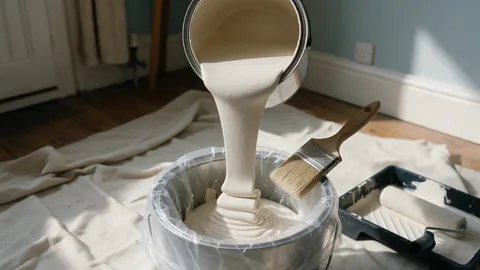 | Paint being poured from a plain tin into a lined metal kettle, used on the about page | Generated for this demo | Illustrative only |
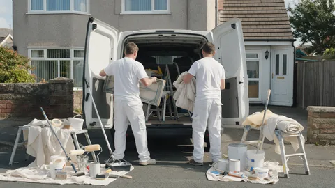 | Two decorators unloading a pasting table and dust sheets from a plain van, used on the about page | Generated for this demo | Illustrative only |
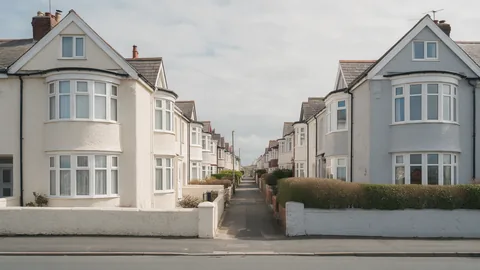 | A street of bay fronted houses with painted render fronts, used on the home, areas and area pages | Generated for this demo | Illustrative only |
The rest of it
Everything else on the page is drawn in the browser: the brand mark, the icons, the four sheens on the home page, the cut in under each heading, the numbered diagrams of what a paint job is made of and what the surface is telling you, the five step rail showing what happens before any paint, and the three light panels showing how one colour changes round a room. No stock photography, no clip art and no third party images.
Nobody in any picture is identifiable, and no tin, tub, tool, bag, workwear or van carries a real name or logo. Every file is a WebP under 200 KB.
The before and after
The pair on the home page is the same room twice. The 'after' picture was generated from the 'before' one, so the window, the proportions and the floorboards all match. It is there to show the thing worth noticing about decorating, which is that almost none of the difference is the paint.
The words
All the copy on this site was written for this demo. The firm, the people, the jobs and the reviews are invented. Anything factual, like why new plaster needs a mist coat or why older textured coatings must be tested before they are disturbed, is general trade knowledge rather than advice on your property. There are no prices, no guarantees, no schemes, no qualifications and no response times anywhere on it, on purpose.
The numbers
The firm's number, 01632 960610, comes from the range Ofcom keeps for television and film, so it rings nobody. The email address ends in .example, which cannot receive anything. The only real number anywhere on this site is Clockwork's own, 07460 038202, in the bar at the top and the note at the bottom, and it is labelled as Clockwork's rather than the firm's.
Want one like this for a real firm?
Ring Clockwork on the number in the bar at the top of the page. This demo is here to show what gets built, not to sell you a coat of paint.